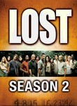
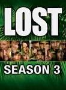
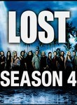
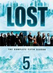
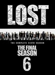

Lost
Stephen Klancher
...has seen 3
...has seen 0.1 hours
...has not seen 2 hours

Timeline
Most Recent:
Tabula Rasa
First Unseen:
Walkabout (# 4)
...has seen 3
...has seen 0.1 hours
...has not seen 2 hours
Timeline
Most Recent:
Tabula Rasa
First Unseen:
Walkabout (# 4)






